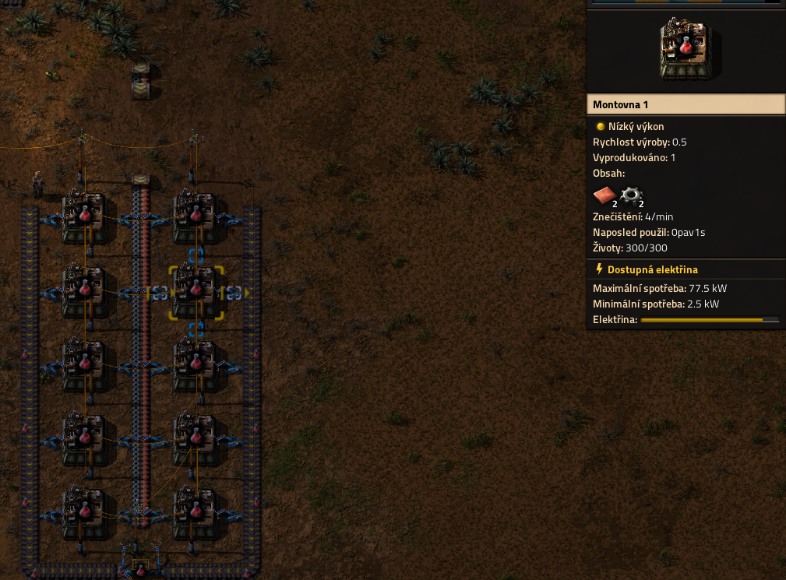

Automatizační vědecký balíček
Automatizační vědecký balíček je první balíček který budete ve hře potřebovat. Vyrábí se jenom z měděného plátu a ozubené kolečko vyrobené z železného plátu. Tento balíček je potřeba ve všech výzkumech ve hře vyrábí se jenom 6 sekund za rychlosti výroby 1. K automatizaci tohohle balíčku budete potřebovat elektřinu, pece které vypékají železo a měď, montovny které vyrábí kolečka ze železných plátů a montovny na výrobu samotného balíčku.
Obrázek ukazuje montovny na kolečka z pokročilé hry ale dají se takhle postavit i na začátku hry jen s horšímy montovnamy, pásy a překladači
{kind=link}
Obrázek ukazuje montovny na automatizační balíček na začátku
{kind=link}
Obrázek ukazuje výzkumný strom co se může vyzkoumat s automatizačním balíčkem
{kind=link}
Logistický vědecký balíček
Logistický vědecký balíček je potřeba k pokročilému výzkumu zabívající se logistikou jak jeho jméno napovídá. Jeho výroba je složitější je zapotřebí žlutý pás a žlutý překladač na které potřebujete už elektrické obvody.
Obrázek ukazuje výrobu překladače a pásů v pokročilé části hry ale dá se použít stejný styl i na začátku hry
{kind=link}
Obrázek ukazuje výrobu elektrických obvodů v pokročilé části hry ale stejně se dá použít i na začátku hry
{kind=link}
Obrázek ukazuje montovny na logistický balíček
{kind=link}
Obrázek ukazuje kus výzkumného stromu logistického balíčku
{kind=link}